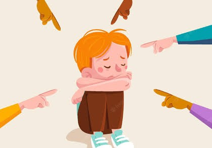

PRESENCIALFísico
Golpear, empujar, patear o dañar las pertenencias de alguien.
Ejemplo: un grupo empuja repetidamente a un compañero en los recreos y le impide pasar.
Qué hacer: priorizar la seguridad y avisar a una persona adulta responsable.